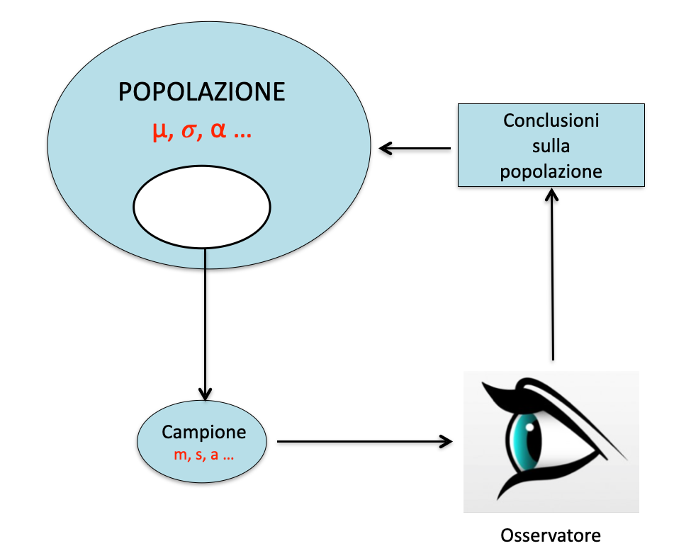
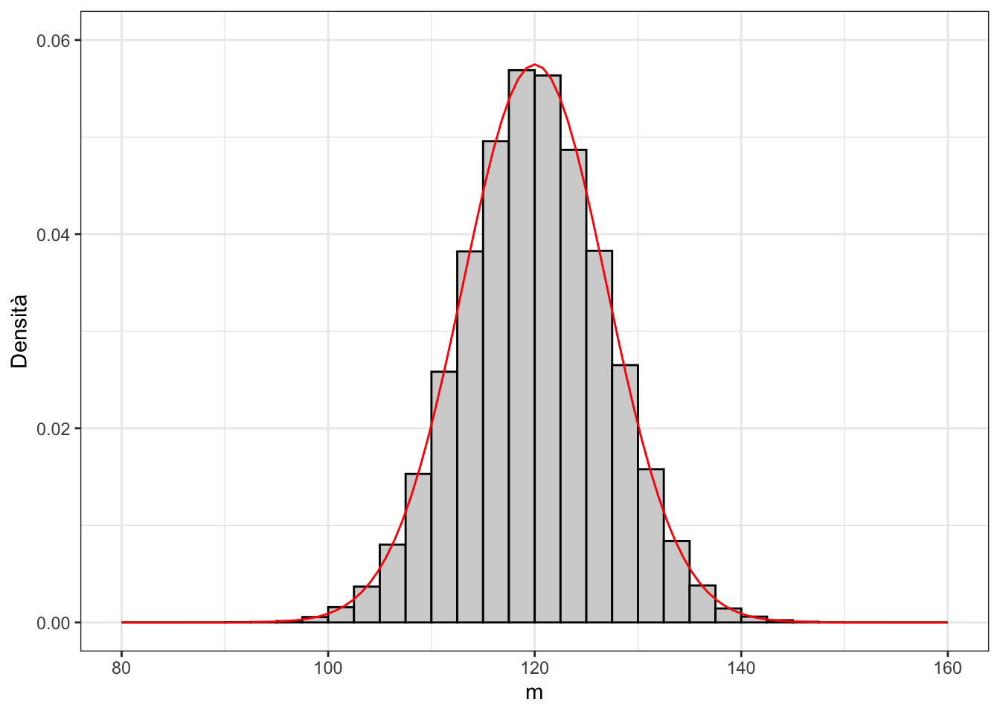
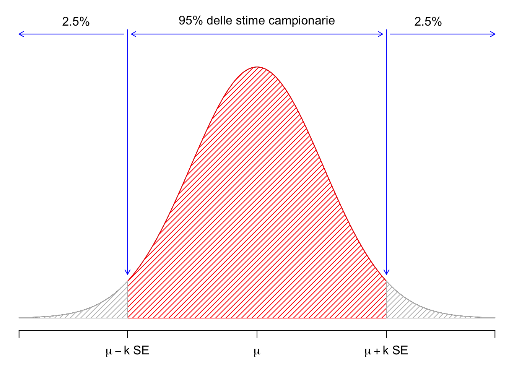

6 Stime ed incertezza
Death is a fact. All else is inference (W. Farr)
Nei capitoli 3 e 4 abbiamo esaminato diversi metodi per descrivere il dataset in esame ed evidenziare le possibili relazioni causa-effetto tra le variabili osservate. Tuttavia, il singolo dataset prodotto in un esperimento è raramente interessante di per sè, in quanto il nostro obiettivo di ricercatori è raggiungere conclusioni generali applicabili all’intera popolazione di individui rappresentati dal nostro campione. Ad esempio, se avessimo campionato un certo numero di appezzamenti rappresentativi di un certo macro-ambiente e avessimo determinato la resa di una coltura, potremmo utilizzare i valori osservati per calcolare la media del campione. Ma la domanda di ricerca non è: “Qual è la produzione degli appezzamenti in prova?”, bensì “Qual è la produzione della coltura nell’intero macro-ambiente?”
Anche se il campione è stato selezionato in modo da essere pienamente rappresentativo dell’intera popolazione, è chiaro che qualunque statistica descrittiva calcolata per il campione (ad esempio, media, deviazione standard, coefficiente di correlazione, rapporto F o parametri del modello) differisce in qualche modo dalla corrispondente statistica descrittiva calcolata per l’intera popolazione. Quindi, l’inferenza statistica non è altro che una tecnica per rispondere alla seguente domanda: “Cosa possiamo dire della popolazione dopo aver visto il campione?”. Il processo logico è riassunto in Figura 6.1.
Riprendiamo l’esempio 5.3, relativo ad un pozzo inquinato da un erbicida a concentrazione pari a 120 \(mg/L\) (Capitolo 5), misurata tramite uno strumento che, unitamente a tutte le altre fonti ignote di errore, produce un coefficiente di variabilità del 10% (corrispondente ad una deviazione standard di 12 \(mg/L\)). Abbiamo visto che, immaginando di fare le analisi in triplicato, i risultati di questo esperimento possono essere simulati con il modello della media, come lo abbiamo descritto nel capitolo precedente, cioè \(Y_O = Y_E + \varepsilon\), con \(\varepsilon \sim N(0, \sigma)\), \(Y_E = 120\) e \(\sigma = 12\).
Nell’esempio 5.3, la simulazione di Monte Carlo ha portato ai seguenti risultati: 105.5, 123.3 e 133.01 mg/L. Se adattiamo il “modello della media” a questo set di dati otteniamo un valore \(m = 120.62\), che differisce, anche se di poco, dal valore vero \(\mu = 120\), evidenziando l’attesa discrepanza tra la statistica campionaria e quella della popolazione (\(m \neq \mu\)).
# Code box 6.1
# Riprendiamo l'esempio 5.3
set.seed(1234)
Y_E <- 120
epsilon <- rnorm(3, 0, 12)
Y_O <- Y_E + epsilon
# Fitting the ’model of the mean’ to the observed results
mod <- lm(Y_O ~ 1)
coef(mod)
## (Intercept)
## 120.6192A questo punto rimettiamoci in una situazione reale: non sappiamo quale sia la concentrazione nel pozzo e cerchiamo di determinarla utilizzando i risultati dell’esperimento appena citato. In assenza di altre informazioni, è logico concludere che \(\mu = m\), cioè che la statistica della popolazione coincida con quella campionaria. Questo processo con il quale assegniamo alla popolazione il valore della statistica campionaria prende il nome di stima puntuale. È un processo legittimo, ma insufficiente, in quanto \(m \neq \mu\), il che non ci sorprende: non è ragionevole infatti pensare che un qualunque campione possa riflettere con esattezza le caratteristiche della popolazione che lo ha generato. La nostra stima dovrà quindi essere ben più prudenziale.
L’approccio tradizionale consiste nel determinare un un intervallo di valori, che sia in grado di “catturare” la statistica della popolazione con elevata confidenza e una bassa probabilità di errore (stima per intervallo). Tale intervallo è chiamato Intervallo di confidenza (Confidence Interval: CI) ed è basato sulle teorie di Karl Pearson (1857-1936), di suo figlio Egon Pearson (1895-1980) e di Jerzy Neyman (1894-1981), nonché sul lavoro di Ronald Fisher. Il CI è uno dei fondamenti della cosiddetta inferenza frequentista, che non è l’unico tipo di inferenza disponibile e non è esente da alcune incongruenze concettuali Morey et al. (2016). Tuttavia, è molto comune e ampiamente utilizzata nella maggior parte degli articoli scientifici. Il termine “frequentista” deriva dal fatto che l’IC è costruito considerando la variabilità delle stime campionarie quando gli esperimenti vengono ripetuti e la frequenza con cui vengono ottenute i valori ‘sbagliati’.
6.1 Ripetere gli esperimenti
Il nostro esperimento è solo simulato e possiamo quindi ripeterlo ‘gratuitamente’ un numero anche molto elevato di volte, seguendo questa procedura:
- Campioniamo tre individui da una distribuzione normale con media 120 e deviazione standard pari a 12
- Adattiamo ai risultati il modello della media, per ottenere una stima \(m\)
- Ripetiamo l’esperimento per 100’000 volte in modo da ottenere altrettante stime
- Calcoliamo la media delle medie e la deviazione standard delle medie
Nel Code Box 6.2, il procedimento appena illustrato è eseguito tramite l’impiego della funzione for(), che permette di ripetere tutte le istruzioni tra parentesi graffe, mentre il contatore \(i\) viene aggiornato ad ogni ciclo, da 1 a 100.000. Alla fine, il dataframe “result” contiene 100.000 stime ottenute da altrettanti esperimenti; questa popolazione di stime campionarie è chiamata distribuzione campionaria e mostra come le stime campionarie cambino nel corso di esperimenti (ancorchè ‘elettronici’) ripetuti quando la “verità vera” resta costante (\(\mu = 120\) e \(\sigma = 12\)). Alla fine possiamo utilizzare la statistica descrittiva per caratterizzare le proprietà di questa popolazione di stime.
# Code box 6.2
# Monte Carlo simulation #1
nrep <- 3
mean <- 120
sigma <- 12
set.seed(1234)
result <- rep(0, 100000)
for (i in 1:100000){
sample <- rnorm(nrep, mean, sigma)
mod <- lm(sample ~ 1)
result[i] <- coef(mod)
}
# Characterising the population of estimates
min(result)
## [1] 90.14123
max(result)
## [1] 149.0346
result[result == 120]
## numeric(0)
mean(result)
## [1] 120.0341
sd(result)
## [1] 6.939063Notiamo che:
- Ci sono anche valori molto alti/bassi (da 90.1 a 149.0), sebbene questi valori così discrepanti siano molto ‘rari’
- Non c’è alcun valore esattamente uguale a 120
- La media delle medie è praticamente coincidente con \(\mu\), la verità ‘vera’. Ciò conferma che la stima puntuale \(m\) è uno stimatore non distorto di \(\mu\), perché tende a convergere su \(\mu\) quando il numero di repliche tende a diventare molto elevato;
- La deviazione standard delle medie è pari a 6.94 e prende il nome di errore standard (SE).
Quest’ultima statistica è di importanza fondamentale, in quanto caratterizza la replicabilità di un esperimento, ovvero la sua precisione. In particolare, si può dire che più è alto l’errore standard, più è incerta la stima e più è alta la sua variabilità in caso di esperimenti ripetuti.
6.2 La ‘sampling distribution’ teorica
Building a sampling distribution empirica con una approccio Monte Carlo è sempre possibile, ma è spesso poco pratico e richiede molto tempo. E’molto più facile descrivere la sampling distribution con una funzione di densità formale. Se discretizziamo il vettore ‘result’ e riportiamo le frequenze su un grafico a barre (Fig. 6.2 ), vediamo con chiarezza che la sampling distribution empirica somiglia molto ad una distribuzione normale, con media pari a 120 e deviazione standard pari a 6.94.
Questa somiglianza può essere spiegato in base al teorema centrale del limite (o teorema del limite centrale), che teorizza che, qualunque sia la popolazione di partenza, molte statistiche campionarie, tra cui la media, calcolate su campioni casuali ed indipendenti, tendono a distribuirsi in modo approssimativamente normale, con una media pari alla corrispondente statistica della popolazione1.

Ammettendo quindi che la sampling distribution fosse normale, potremmo definire un intervallo basato su un multiplo dell’errore standard e quindi compreso tra \(\mu - k \times SE\) e \(\mu + k \times SE\), in modo da comprendere al suo interno il 95% delle stime campionarie possibili (Fig. 6.3). Inoltre, sempre assumendo cha la sampling distribution fosse normale, \(k\) sarebbe pari al 97.5° percentile di una distribuzione gaussiana standardizzata (ovvero una distribuzione gaussiana con media uguale a 0 e deviazione standard pari a 1), che è prossimo a 2 (con R: qnorm(0,975) = 1.960). Sfortunatamente, nella maggior parte dei casi, la distribuzione campionaria è solo approssimativamente gaussiana, quindi \(k\) deve essere determinato in modo diverso, come vedremo in seguito.

6.3 L’intervallo di confidenza frequentista
Come abbiamo detto, l’intervallo menzionato in precedenza contiene il 95% delle stime campionarie e, di conseguenza, soddisfa la seguente espressione:
\[P \left[ \mu - k \times SE \leq m \leq \mu + k \times SE \right] = 0.95\]
Con semplici passaggi algebrici (sottraiamo \(\mu\) ed \(m\) da tutti i termini, moltiplichiamo per \(-1\) e riorganizziamo il tutto), possiamo ricavare la seguente espressione:
\[P \left[ m - k \times SE \leq \mu \leq m + k \times SE \right] = 0.95\]
che è di estrema importanza, in quanto esprime il concetto che, se facciamo un esperimento ed otteniamo una media pari ad \(m\) e scegliamo accuratamente \(k\), possiamo costruire un intervallo di confidenza intorno alla nostra stima, pari a \(k\) volte l’errore standard e tale da contenere la media vera \(\mu\) con una probabilità del 95%. Questa espressione costituisce l’euristica più utilizzata per costruire l’intervallo di confidenza, anche se dobbiamo capire come ottenere SE e \(k\).
6.4 Come otteniamo l’errore standard?
In alcuni casi, l’errore standard può essere ottenuto tramite semplici regole (Cochran and Cox 1950), a partire dalla deviazione standard della popolazione di partenza. Ad esempio, nel caso della media campionaria, l’errore standard (SEM: Standard Error of a Mean) può essere ottenuto con la legge di propagazione degli errori (vedi capitolo 3.3):
\[\textrm{SEM} = \frac{\sigma}{\sqrt n}\]
Nell’esempio precedente, l’errore standard è \(12/\sqrt{3} = 6,928\), molto vicino alla deviazione standard della distribuzione campionaria empirica.
Allo stesso modo, è possibile dimostrare che l’errore standard della differenza tra le medie di due campioni (SED: Standard Error of a Difference) indipendenti con numerosità, rispettivamente, pari a \(n_1\) ed \(n_2\), estratti da due popolazioni con la stessa varianza e la stessa media è:
\[\textrm{SED} = \sqrt{ \frac{\sigma^2}{n_1} + \frac{\sigma^2}{n_2}}\]
A parte questi due semplici casi, calcolare manualmente l’errore standard è difficile, ma, fortunatamente, possiamo quasi sempre ricavarlo da R o dagli altri software statistici. In particolare, per i modelli ottenuti con la funzione lm() o con altre funzioni di fitting in R, gli errori standard per le stime dei parametri possono essere ricavati con la funzione summary(), passando l’oggetto che risulta dal fitting come argomento. Ad esempio, riconsideriamo i dati dell’esperimento varietale a randomizzazione completa con tre repliche e quattro genotipi di avena, denominati A, B, C e D (Esempio 4.3). Se adattiamo ai risultati un semplice modello ANOVA ad una via (\(Y_i = \mu + \alpha_j + \varepsilon_i\)), le stime dei parametri con i relativi errori standard possono essere ottenute come mostrato nel riquadro sottostante.
# Code box 6.3
# Errori standard per le stime dei parametri
library(statforbiology)
dataset <- getAgroData("Oat1L")
mod6.1 <- lm(Yield ~ Genotype, data = dataset)
summary(mod6.1)
##
## Call:
## lm(formula = Yield ~ Genotype, data = dataset)
##
## Residuals:
## Min 1Q Median 3Q Max
## -0.17333 -0.08917 0.01833 0.07417 0.16333
##
## Coefficients:
## Estimate Std. Error t value Pr(>|t|)
## (Intercept) 4.58000 0.07566 60.531 6.17e-12 ***
## GenotypeB -1.02667 0.10700 -9.595 1.16e-05 ***
## GenotypeC -0.49667 0.10700 -4.642 0.00166 **
## GenotypeD 0.01667 0.10700 0.156 0.88008
## ---
## Signif. codes: 0 '***' 0.001 '**' 0.01 '*' 0.05 '.' 0.1 ' ' 1
##
## Residual standard error: 0.1311 on 8 degrees of freedom
## Multiple R-squared: 0.9412, Adjusted R-squared: 0.9192
## F-statistic: 42.71 on 3 and 8 DF, p-value: 2.866e-056.5 Come otteniamo il moltiplicatore \(k\)?
Per selezionare il moltiplicatore \(k\), dobbiamo considerare il coverage dell’intervallo di confidenza, ovvero la frequenza con cui esso “cattura” il valore reale della statistica della popolazione. Generalmente, maggiore è il valore di \(k\), maggiore è l’ampiezza dell’intervallo e maggiore è il coverage. Le informazioni di letteratura suggeriscono un coverage del 95%, corrispondente a una probabilità di errore del 5%; di conseguenza, dovremmo chiederci: quale valore di \(k\) consenta di raggiungere tale confidenza?
Abbiamo già visto che, se la sampling distribution fosse veramente gaussiana, \(k\) sarebbe all’incirca uguale a 2. Per determinare il coverage con questo valore di \(k\) possiamo utilizzare il metodo Monte Carlo; in relazione all’esempio iniziale, riguardante il pozzo inquinato con una sostanza erbicida, possiamo eseguire, ripetutamente, queste operazioni:
- campioniamo tre individui da una popolazione gaussiana, con media pari a 120 e deviazione standard pari a 12;
- adattiamo a questi tre individui il modello della media per ottenere una stima della media dell’intero pozzo, insieme al suo errore standard;
- costruiamo un CI, utilizzando come moltiplicatore \(k = 2\). Se tale CI contiene il valore reale di 120 mg/L, l’esito è positivo e quindi assegniamo al risultato il valore 1 e lo immagazziniamo nel vettore ‘result’. Altrimenti assegniamo il valore 0 (funzione
ifelse()); - ripetiamo i passaggi da 1 a 3 almeno per 100.000 volte e contiamo il numero di successi.
# Code box 6.4
# Monte Carlo simulation - 2
# Coverage of a confidence interval
# depending on the multiplier k
# Sampling 3 reps from a gaussian with mean=120 and sd=12
mean <- 120
sigma <- 12
nrep <- 3
# nrep <- 20
k <- 2
# k <- qt(0.975, nrep - 1)
set.seed(1234)
result <- rep(0, 100000)
for (i in 1:100000){
sample.i <- rnorm(nrep, mean, sigma)
mod <- lm(sample.i ~ 1)
m <- coef(mod)
se <- summary(mod)$coef[1,2]
limInf <- m - k * se
limSup <- m + k * se
# did we capture the mean?
result[i] <- ifelse(limInf < 120 & limSup > 120, 1, 0)
}
sum(result)/100000
## [1] 0.81708Il box sovrastante mostra che, impostando \(k = 2\) si ottiene un coverage molto basso (inferiore all’82%), corrispondente a una probabilità di errore di quasi il 19%, che è inaccettabile. Il problema è che la dimensione del campione è molto piccola e, pertanto, la distribuzione campionaria di \(m\) non è ben approssimata con una PDF gaussiana. Se la stessa simulazione fosse eseguita con 20 repliche anziché con 3, il coverage aumenterebbe al 94% (provare per credere; basta cambiare la linea di codice nrep <- 3 con nrep <- 20). In pratica, utilizzare \(k = 2\) è ritenuto accettabile solo quando la dimensione del campione è superiore a 20-25 unità.
Per piccoli campioni (e in generale), è possibile ottenere un coverage esatto del 95% utilizzando il 97.5° percentile della distribuzione t di Student. Per ottenere questo valore, si può utilizzare la funzione qt() in R, che richiede, come minimo, due argomenti: il primo è il percentile desiderato, mentre il secondo rappresenta il numero di gradi di libertà per l’errore standard. Nel nostro esempio abbiamo tre repliche, quindi il numero di DF è 3 - 1 = 2; il 97.5° percentile della distribuzione t di Student è quindi pari a qt(0,975, 2) = 4.303, che è molto più alto 2. In genere, il 97.5° percentile della distribuzione t di Student diminuisce all’aumentare del numero di gradi di libertà, tendendo ad 1.96 (cioè al 97.5° percentile della distribuzione normale), quando il numero di DF tende a \(\infty\). Se utilizziamo il codice sovrastante e sostituiamo alla linea k <- 2, il comando k <- qt(0.975, nrep - 1) possiamo confermare che il coverage diviene quasi esattamente del 95% (quasi, poiché il numero di simulazioni è molto alto, ma non infinito).
Se necessario, possiamo anche costruire un intervallo di confidenza del 99%, che riduce il rischio di errore all’1%. Basta utilizzare il 99.5° percentile di una distribuzione t di Student. In generale, se \(\alpha\) è il livello di confidenza desiderato, il percentile corrispondente è \(q_{\alpha} = 1 - (1 - \alpha/2)\) (quindi \(q_{0.05} = 1-(1-0.95)/2=0.975\) e \(q_{0.99} =1-(1-0,99)/2=0.995)\).
6.6 Quali sono le limitazione del CI?
L’intervallo di confidenza frequentista è ampiamente utilizzato nella letteratura scientifica, mentre la stima puntuale è spesso considerata inaccettabile. Ad esempio, le linee guida per gli autori di Weed Research, una rivista internazionale di alto livello nel campo della scienza delle piante, affermano che “tutti i valori stimati (ad esempio, parametri del modello, medie, differenze, ecc.) devono essere presentati insieme a un’appropriata misura di variabilità nel testo, nelle tabelle e nei grafici”2.
Gli intervalli di confidenza sono molto spesso presentati nella forma più semplice “stima \(\pm\) errore standard”, sebbene la copertura di tale intervallo sia piuttosto limitata.
Nonostante l’ampia diffusione ed accettazione dell’intervallo di confidenza frequentista, è necessario essere consapevoli dei suoi limiti (Hastie et al. 2009). In particolare, l’intervallo di confidenza deve essere interpretato con riferimento a una distribuzione campionaria, ovvero alle ipotetiche ripetizioni dello stesso esperimento con campioni diversi, come mostrato nel Code Box 6.4. Al contrario, non è possibile interpretare l’intervallo di confidenza con riferimento a ogni singolo sforzo di campionamento, ovvero non possiamo affermare che lo specifico intervallo determinato per un singolo esperimento contenga il vero parametro della popolazione con una probabilità del 95%, perché ciò non è vero; in particolare, non bisogna dimenticare che il CI cambia ad ogni campionamento, come si vede nel Code Box 6.4 (vedi anche Morey et al. 2016).
6.7 Gli intervalli di confidenza in pratica
6.7.1 Esempio 6.1: IC per una media campionaria
Immaginiamo di aver condotto un esperimento misurativo per determinare la resa media dei girasoli in un macro-ambiente dell’Italia centrale. Abbiamo quindi selezionato venti campi casuali in questo macro-ambiente ed abbiamo determinato i valori di resa riportati nel riquadro sottostante; sulla base di questi risultati, qual è la resa media nell’intero macro-ambiente? In questo esempio, la media campionaria è \(m = 58,68\) ed è una stima puntuale affidabile della resa media nell’intero macro-ambiente. Per calcolare il CI, dobbiamo determinare:
- l’errore standard, che può essere facilmente calcolato utilizzando la semplice equazione riportata più sopra (\(\textrm{SEM} = {\sigma}/{\sqrt n}\)). La deviazione standard della popolazione \(\sigma\) è ignota, ma possiamo sostituirla con la deviazione standard del campione, che è 3.47 (principio del ‘plug-in’);
- Il moltiplicatore \(k\), pari al 97.5° percentile della distribuzione t di Student (ovvero, 2.09).
Di conseguenza, i due limiti dell’intervallo di confidenza sono rispettivamente 58.68 - 2.09 \(\times\) 0.775 = 57.1 e 58,68 + 2.09 \(\times\) 0.775 = 60.3. La conclusione è che, con un livello di confidenza del 95%, la resa media nel macro-ambiente rientra nell’intervallo tra 57.1 e 60.3.
# Code box 6.5
# Example 6.1
# Confidence interval for a sample mean
# Input the sample and calculate the mean
Y <- c(54.08, 66.31, 56.17, 56.32, 52.01, 58.91, 58.74, 57.49,
59.57, 61.71, 56.89, 54.82, 56.88, 60.05, 59.39, 57.19,
64.76, 61.36, 62.03, 58.83)
m <- mean(Y)
m
## [1] 58.6755
# Calculate the standard error
s <- sd(Y)
SEM <- s/sqrt(length(Y))
SEM
## [1] 0.7754783
# Determine the multiplier
k <- qt(0.975, length(Y) - 1)
k
## [1] 2.093024
# Calculate the limits of the CI # Lower limit
mean(Y) - k * SEM
## [1] 57.05241
# Higher limit
mean(Y) + k * SEM
## [1] 60.29859Più facilmente, possiamo pervenire allo stesso risultato stimando un modello della media, ed utilizzando la funzione confint(), come indicato nel riquadro sottostante.
# Code box 6.6
# Example 6.1 [continuation]
# Retrieving confidence intervals from model fit
mod <- lm(Y ~ 1)
confint(mod)
## 2.5 % 97.5 %
## (Intercept) 57.05241 60.298596.7.2 Example 6.2: CIs for model parameters
Lo stesso approccio del riquadro sovrastante può essere utilizzato praticamente con ogni altro modello in R. Ad esempio, riconsiderando i dati ‘Oat1L’ dell’ Esempio 4.3 e stimando un modello ANOVA ad una via come nel riquadro 4.3, gli intervalli di confidenza per le stime dei parametri possono essere ottenuti come nel Riquadro 6.7.
# Code box 6.7
# Example 6.2
# CIs for model parameters for the ’Oat1l’ data
# Load libraries and data library(statforbiology)
dataset <- getAgroData("Oat1L")
# Fit the model
mod6.1 <- lm(Yield ~ Genotype, data = dataset)
# CIs for model parameters
confint(mod6.1)
## 2.5 % 97.5 %
## (Intercept) 4.4055191 4.7544809
## GenotypeB -1.2734199 -0.7799134
## GenotypeC -0.7434199 -0.2499134
## GenotypeD -0.2300866 0.26341996.8 Altri approcci per il calcolo del CI
L’approccio proposto in questo capitolo si basa su due pre-requisiti fondamentali:
- la distribuzione campionaria sia gaussiana (almeno approssimativamente), e
- sia possibile, in qualche modo, calcolare un errore standard affidabile.
Nei casi in cui questi due pre-requisiti non siano soddisfatti, gli intervalli di confidenza possono essere determinati con altri approcci, come il metodo Monte Carlo (simile a quello utilizzato nel riquadro 6.2) o il metodo bootstrap (Chernick 2011). Inoltre, vale la pena menzionare l’“Intervallo Credibile” (Credible Interval), che è la controparte bayesiana dell’intervallo di confidenza frequentista (Kruschke 2011).
Questi metodi fanno parte della cosiddetta computer intensive statistic e possono essere molto utili in alcune circostanze, ma non saranno illustrati in dettaglio perché sono molto avanzati ed esulano dallo scopo di questo libro introduttivo.
6.9 Domande ed esercizi
- In un campo di frumento sono state campionate trenta aree di saggio di un metro quadrato ciascuna, sulle quali è stata determinata la produzione. La media delle trenta aree è stata di 6.2 t/ha, con una varianza pari a 0.9. Stimare la produzione dell’intero appezzamento.
- Siamo interessati a conoscere il contenuto medio di nitrati dei pozzi della media valle del Tevere. Per questo organizziamo un esperimento, durante il quale campioniamo 20 pozzi rappresentativi, riscontrando le concentrazioni riportate di seguito. Stimare la concentrazione media per l’intera valle del Tevere
38.3 38.6 38.1 39.9 36.3 41.6 37.0 39.8 39.1
35.0 38.1 37.4 38.3 34.8 40.4 39.3 37.0 38.7
38.2 38.4 - E’stata impostata una prova sperimentale per confrontare due varietà di mais, con uno schema sperimentale a blocchi randomizzati con tre repliche. La prima varietà ha mostrato produzioni di 14, 12, 15 e 13 t/ha, mentre la seconda varietà ha mostrato produzioni pari a 12, 11, 10.5 e 13 t/ha. Stimare le produzioni medie delle due varietà, nell’ambiente di studio.
- Un campione di 400 insetti a cui è stato somministrato un certo insetticida mostra che 136 di essi sono sopravvissuti. Determinare un intervallo di confidenza con grado di fiducia del 95% per la proporzione della popolazione insensibile al trattamento.
- È stata studiata la risposta produttiva del sorgo alla concimazione azotata, con un esperimento i cui risultati sono riportati di seguito .Assumendo che la relazione sia lineare (retta), stimare la pendenza e l’intercetta della popolazione di riferimento, dalla quale è stato estratto il campione in studio. Utilizzare la funzione
lm(Yield ~ Dose)ed estrarre gli errori standard con il metodosummary().
| Dose | Yield |
|---|---|
| 0 | 1.26 |
| 30 | 2.50 |
| 60 | 3.25 |
| 90 | 4.31 |
| 120 | 5.50 |
- Utilizzando una simulazione Monte Carlo opportunamente pianificata, mostrare che la varianza del campione (uguale alla devianza divisa per il numero di individui meno uno) fornisce una stima più accurata della varianza della popolazione, rispetto allo scarto quadratico medio (devianza divisa per il numero di soggetti) che è invece uno stimatore distorto. Suggerimento: ricordare che uno stimatore accurato ha una distribuzione campionaria (sampling distribution) il cui valore atteso coincide con il valore da stimare.
Il teorema centrale del limite vale per campioni di dimensione elevata, composti da almeno 20-25 unità↩︎
Tradotto in italiano dalla guida per gli autori di Weed Research, vedi https://onlinelibrary.wiley.com/page/ journal/13653180/homepage/forauthors.html(accesso in data 24 Aprile 2025))↩︎